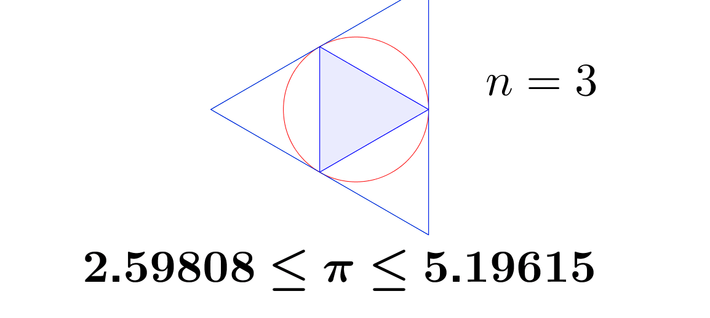
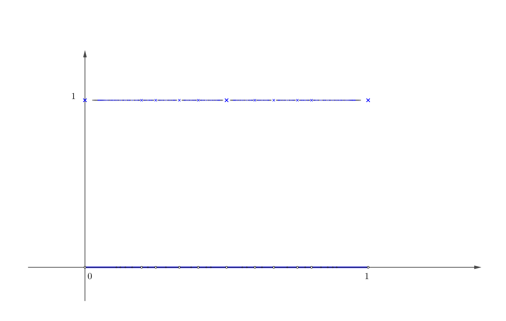
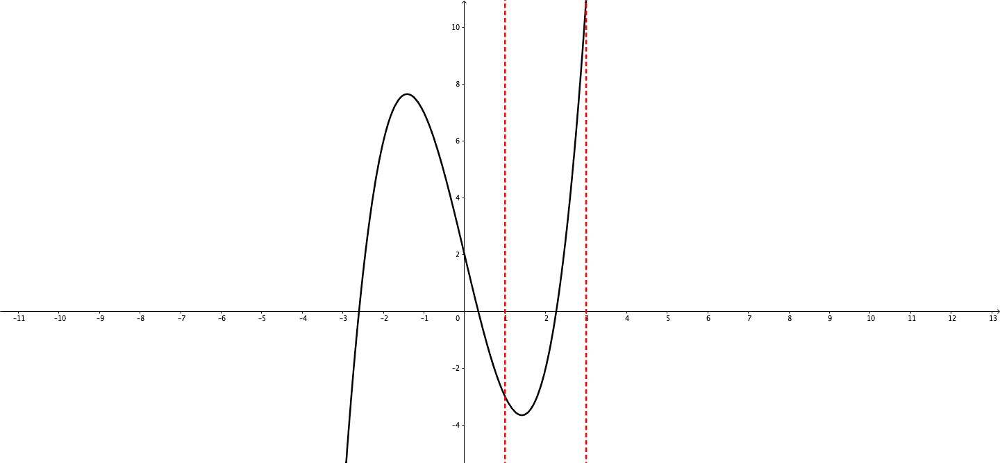
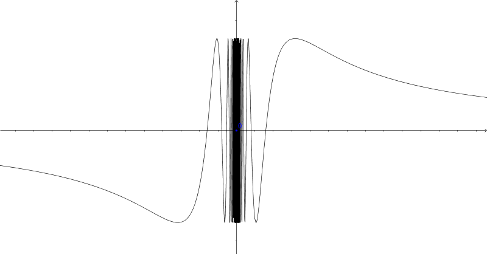
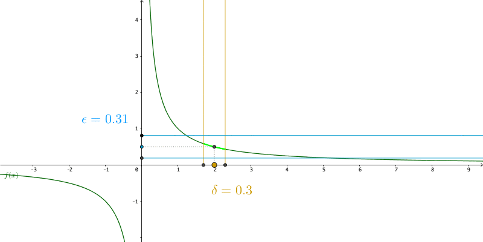
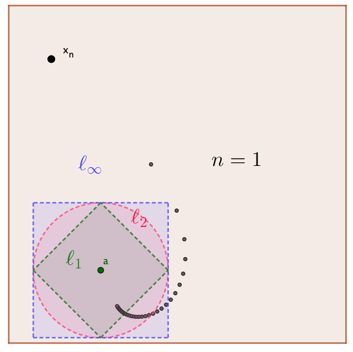

How do you distinguish the reality depicted in a realistic painting and the existing physical object? Descartes’ distinction between two sorts of perceptions, having the soul as a cause and having the body as a cause, is the key to the solution of the mind-body problem for the Christian thinkers of the 17th century. According to Descartes, the objective reality of a thought signifies the existence of a particular mental counterpart of the real content (like the painting), while the formal reality is the object of the representation in the physical world, or the spatio-temporal world (like the physical object). For the 17th century thinkers, no matter what the mechanism of perceiving is, the guarantee for the final stage of a correct correspondence between these two types of perceptions is the realm of being thought of by God.
Leibniz, who shared the credit with Newton for the development of the calculus, formed his metaphysics system taking for granted the Cartesian distinction between two types of perceptions. In his system, the first level, the real cause of the metaphysical activity, is implanted by God.67 “God has ideas before creating the objects of the ideas, and there is nothing to prevent him from passing such ideas on to intelligent creatures: there is not even any exact demonstration proving that the objects of our senses, and of the simple ideas which our senses present to us are outside of us.” - Leibniz (1996) However, in the second level, he considers the mind as it is formed from a particular perspective by each particular thought (monadic perception in his words). Each thought is reflected by one another and so on ad infinitum.68 “It is impossible that we should always reflect explicitly on all our thoughts; for if we did, the mind would reflect on each reflection ad infinitum, without ever being able to move to a new thought.” - Leibniz (1996) Such an infinite sequence is considered to be the metaphysical correlated and forms Leibniz’s principle of continuity: whatever happens for the finite, also happens for the infinite. In the preface of Leibniz (1996), he said, “Nothing takes place suddenly, and it is one of my great and best confirmed maxims that nature never makes leaps.”
Nature never makes leaps. That is, the correlations between events in nature, which can be considered as values of a variable \(x\) and their consequences \(y\) are described by a continuous function \(y=f(x)\). The usual way of defining continuity of a function \(f(\cdot)\) at certainty point \(a\) is to set up a convergent sequence \((x_{i})_{i\in\mathbb{N}} \rightarrow a\) and to see whether an infinitesimal change in \(x_{i}\) will only lead to an infinitesimal change in \(f(x_{i})\). Informally stated, continuity means that a small change in input of the function will lead to a small change in output. If the range of \(x\) were continuous, and if the range of \(y\), namely the corresponding natural event, were not, then the principle of continuity would be violated. The function of nature, namely the correct correspondence implanted by God, in Leibniz’s view, must be continuous.
Before going to detail, we first need some concrete sense about the meaning of the “infinitesimal.” An infinitesimal quantity, while not necessarily coinciding with zero, is, for some reason, smaller than any finite number. In the terminology of convergence, the term “infinitesimal” refers to the tail of any sequence whose limit is zero.
Let’s consider the “difference” between a rational number and an irrational one where the infinitesimal will appear. Such a “difference” is vital for computer processing because the operations of the current computer system only work on \(\mathbb{N}\), the set of natural numbers. By \(\mathbb{N}\), we can construct a rational number system \(\mathbb{Q}\) but not the real number system \(\mathbb{R}\) because there is no surjective map between \(\mathbb{N}\) and \(\mathbb{R}\) for the construction (Cantor’s theorem in section 5.2).
We can extend the natural numbers system to integers \[\mathbb{Z}=\{\dots,-2,-1,0,1,2,\dots\}\] by having the inverse operation of the addition, namely the subtraction. Then we can construct rational numbers by multiplication and division of the integers \[\mathbb{Q}=\left\{ \frac{a}{b},\mbox{ where }a,b\in\mathbb{Z}\mbox{ and }b\neq0\right\}.\] For any integer number in \(\mathbb{Z}\) or any fraction number in \(\mathbb{Q}\), the computer has no problem in processing it. But things will change when we want the computer to present the exact value of an irrational number, for example, the value of \(\pi\). Since ancient Egypt, people already started using fractions to compute the value of \(\pi\). Around the 5th century, the Chinese reached its value at seven digits. Then around the 17th century, Europeans arrived at around forty digits. But until today, the exact value of \(\pi\) is still unknown because \(\pi\), like any other irrational number, cannot be computed by a computer or a human being in a finite time. A direct construction based on \(\mathbb{N}\) cannot form any exact irrational number.
The real number system provides the cornerstone of the modern digital world. How do we proceed without know the exact values of irrationals? Although we don’t know the exact value of \(\pi\) or any other irrationals, like our ancestors, we can compute a sequence of approximating numbers in \(\mathbb{Q}\) and consider the exact value of \(\pi\) as the limit of the sequence of numbers in \(\mathbb{Q}\).
Rationals and real numbers are well-ordered. Given any \(a,b\in\mathbb{Q}\), exactly one of the following statements is true: \(a<b\), \(a=b\) or \(a>b\). Let \(a_{1}<\pi\), \(b_{1}>\pi\), by the transitivity of the order, we know that \(a_{1}<\pi<b_{1}\). Now we construct \(a_{1}<a_{2}<\pi\) and \(\pi<b_{2}<b_{1}\), for \(a_{2}, b_{2}\in\mathbb{Q}\). We still have \(a_{2}<\pi<b_{2}\), but now both \(a_{2}\) and \(b_{2}\) are getting closer to \(\pi\).69 We can compute \(\pi\) by computing the perimeters of circumscribed and inscribed polygons. The area of a circle is \(\pi r^{2}=\mbox{area}\), where \(r\) is the diameter of the circle. The area of \(n\)-faces polygon approximates to the circle when \(n\rightarrow\infty\). The Chinese mathematician Liu Hui proposed the method at around 265AD. The perimeters of the polygons give two sequences. The values of the sequences converge to \(\pi\).
Figure 6.1: Polygon approximation
If the above strategy constructs the sequence \((a_{n})_{n\in\mathbb{N}}\) and \((b_{n})_{n\in\mathbb{N}}\), then we can infer that the limit of them must be \(\pi\), namely, \(\lim_{n\rightarrow\infty}a_{n}=\lim_{n\rightarrow\infty}b_{n}=\pi\).70 Section 6.2 gives a rigorous discussion about how to get these limits. That is, the sequence \((a_{n})_{n\in\mathbb{N}}\) and \((b_{n})_{n\in\mathbb{N}}\) converge to \(\pi\).
For \(\lim_{n\rightarrow\infty}b_{n}=\pi\), we know for every desired accuracy \(\epsilon\), there is an integer \(N\) such that \(|b_{n}-\pi|<\epsilon\) for all \(n>N\). If our desired accuracy is \(0.01\), then we need \(|b_{n}-\pi|<0.01\). By the method in figure 6.1, we can use \(b_{35}=3.14\) to represent \(\pi\). For any \(n>35\), \(b_{n}\) will give us an approximating value satisfying our desired accuracy.
The approximation makes two sequences converge to \(\pi\), but, even so, neither \((a_{n})_{n\in\mathbb{N}}\) nor \((b_{n})_{n\in\mathbb{N}}\) can reach \(\pi\) because rationals will not become irrationals during the approximation. If we draw the rational numbers on a line, we will be aware that there is a “hole” at the position of \(\pi\) on this line. And in fact, there are infinitely many holes at the locations of irrational numbers. If we want a line to correspond to both rationals and irrationals, we need an extension of \(\mathbb{Q}\) to fill in the holes. The real numbers \(\mathbb{R}\) can be thought of doing such a job. Wherever there is a hole, an irrational number is placed. The real numbers are the union of these irrational numbers together with the rational ones.71 Formally speaking, we extend \(\mathbb{Q}\) to \(\mathbb{R}\) by preserving the ordering and the properties as a field (see section [?] for the definition of field). So \(\mathbb{Q}\) is a sub-field of \(\mathbb{R}\).
Figure 6.2: Dirichlet function
We can visualize those discrepancies via a particular function called the Dirichlet’s function:\[f(x)=\begin{cases} 1, & \mbox{ if }x\in\mathbb{Q},\\ 0, & \mbox{ if }x\notin\mathbb{Q}. \end{cases}\] The domain of \(f\) is \(\mathbb{R}\), and the image is \(\{0,1\}\).72 Figure 6.2 shows that those “crosses” on the rational line \(f(x)=1\) correspond to the “holes” on the irrational line \(f(x)=0\). There are uncountable numbers of irrationals. Thus the cardinality of irrationals is larger than that of rationals. Dirichlet’s function is a nowhere-continuous function on \(\mathbb{R}\). A small change around the input \(\pi\) may cause the leap from the output \(f(\pi)=0\) to \(1\). Thus this kind of discontinuous function would be a nightmare for our computations.
On the other hand, suppose that we compute another function \(f(x)=x^{2}\) around \(x=\pi\) and attempt to use \(a_{n}^{2}\). Because squaring is a continuous operation, this attempt is feasible. We use some sequence \((a_{n})_{n\in\mathbb{N}}\in\mathbb{Q}\) to approximate \(\pi\). For an infinitesimal \(\epsilon\), \(|a_{n}-\pi|<\epsilon\) will give us an infinitesimal change of the output\[|f(a_{n})-f(\pi)| =|a_{n}^{2}-\pi^{2}|=|(a_{n}-\pi)(a_{n}+\pi)| <\epsilon\cdot(a_{n}+\pi)<\epsilon\cdot(3\pi).\] Note that \(\epsilon\) is infinitesimal, so is \(\epsilon\cdot(3\pi)\).
Completeness
In the above polygons approximation, we state that \((a_{n})_{n\in\mathbb{N}}\) and \((b_{n})_{n\in\mathbb{N}}\) must converge to \(\pi\). This statement is an induction based on approximating objects. In fact, we need some rigorous justification to say that sequences are “supposed” to converge actually do. The notion of \(\mathbb{R}\) is complete in the sense that certain infinite operations on \(\mathbb{R}\) will have resulted in \(\mathbb{R}\).
From the geometric perspective, the completeness of \(\mathbb{R}\) means that we can make a continuous line to represent \(\mathbb{R}\), that is, no holes in \(\mathbb{R}\). Now, we consider the meaning of completeness from the axiomatic perspective. It is based on the following axiom:
Axiom of completeness : Every nonempty subset of real numbers that is bounded above has a supremum. Similarly, every nonempty subset of real numbers that is bounded below has an infimum.
Bounded above and bounded below : A set \(\mathcal{X}\subset\mathbb{R}\) is bounded above if there is a real number \(M\) such that \(x\leq M\) for all \(x\in\mathcal{X}\). We call \(M\) an upper bound for \(\mathcal{X}\). Similarly, \(\mathcal{X}\) is bounded below if there is \(m\in\mathbb{R}\) such that \(m\leq x\) for all \(x\in\mathcal{X}\). We call \(m\) a lower bound for \(\mathcal{X}\). A set that is bounded above and below is called bounded.
Supremum and infimum : Suppose that \(\mathcal{X}\subset\mathbb{R}\) is bounded above. Then \(\bar{x}\) is the supremum for \(\mathcal{X}\) if \(\bar{x}\) is an upper bound of \(\mathcal{X}\), and \(\bar{x}\) is smaller than all other upper bounds, namely the least upper bound. It is denoted by \(\bar{x}=\sup\mathcal{X}\). Similarly, if \(\mathcal{X}\) is bounded below, then the infimum \(\underline{x}=\inf\mathcal{X}\) is the greatest lower bound. We often denote the supremum of \(\mathcal{X}\) as \(\sup\mathcal{X}\) and infimum as \(\inf\mathcal{X}\).
Although not every nonempty bounded set on \(\mathbb{R}\) contains a maximum or a minimum, the axiom of completeness asserts that every such set does have a supremum or have an infimum. There are subtle differences between supremum and maximum (infimum and minimum). If a maximum (or minimum) \(x^{*}\) exists for the set \(\mathcal{X}\), then any element \(x\in\mathcal{X}\) should satisfy \(x\leq x^{*}\) (or \(x\geq x^{*}\)), and \(x^{*}\) should belong to the set, \(x^{*}\in\mathcal{X}\). But \(\sup\mathcal{X}\) does not need to be in the set \(\mathcal{X}\). For example, consider the set \[\mathcal{X}=\left\{ 1-\frac{1}{n}:\, n=1,2,\dots \right\} =\left\{ 0,\frac{1}{2},\frac{2}{3},\dots\right\}.\] The supremum of \(\mathcal{X}\) exists, which is \(1\) but \(1\notin\mathcal{X}\). The infimum of \(\mathcal{X}\) is \(0\) and \(0\in\mathcal{X}\). Note that the minimum \(\min\mathcal{X}\) is zero, and there is no maximum because of \(1\notin\mathcal{X}\).
The limiting process is well-behaved with respect to the order operation. Consider the polygons approximation, we have \((a_{n})_{n\in\mathbb{N}}\) bounded above, and \((b_{n})_{n\in\mathbb{N}}\) bounded below: \[a_{1}<a_{2}<\cdots<\pi<\cdots<b_{2}<b_{1}.\] Because \((a_{n})_{n\in\mathbb{R}}\) (\((b_{n})_{n\in\mathbb{R}}\)) is a monotone increasing (decreasing) sequence, we will have73 This result is called the monotone convergence theorem. If \((a_{n})_{n\in\mathbb{N}}\) is a monotone increasing sequence, and \(a_{n}\) is bounded above for any \(n\in\mathbb{N}\), then \(a_{n}\) must be convergent. Similar, if \((b_{n})_{n\in\mathbb{N}}\) is a monotone decreasing sequence, and \(b_{n}\) is bounded below for any \(n\in\mathbb{N}\), then \(b_{n}\) must be convergent. \[\lim_{n\rightarrow\infty}a_{n}=\sup(a_{n})_{n\in\mathbb{N}}, \,\, \lim_{n\rightarrow\infty}b_{n}=\inf(b_{n})_{n\in\mathbb{N}}\]
Proof of monotone convergence theorem
By the construction of the polygons approximation, if these two sequences converge, then we will have the same limit \(\pi\), namely \(\sup(a_{n})_{n\in\mathbb{N}}=\inf(b_{n})_{n\in\mathbb{N}}=\pi\).
Both the supremum of \((a_{n})_{n\in\mathbb{N}}\) and the infimum of \((b_{n})_{n\in\mathbb{N}}\) are not in the original set \(\mathbb{Q}\), but the axiom of completeness ensures their existences in \(\mathbb{R}\). In fact, what the axiom guarantees is that even the interval \([a_{n},b_{n}]\) shrinks infinitely many times in \(\mathbb{R}\), the limit of these shrinking intervals will be a non-empty set in \(\mathbb{R}\). That is, the intervals of real numbers have no holes where the shrinking intervals can escape.74 The rigorous procedure to prove this statement needs Nested interval lemma. The lemma says if a sequence of closed intervals \(\mathcal{I}_{n}=[a_{n},b_{n}]\) satisfying \(\mathcal{I}_{n+1}\subset\mathcal{I}_{n}\) for any \(n\in\mathbb{N}\), then the intersection \(\cap_{n\geq1}\mathcal{I}_{n}\) is non-empty.
Infinite Divisibility
The distinction between discrete objects and continuous ones was one of the great dichotomies in mathematics. The set of real numbers qualifies as a “line” because it is dense and has no gaps. The natural numbers are isolated in the sense that for each natural number \(n\), there is an empty space before the next natural number \(n+1\), so the natural numbers come nowhere close to filling the line. So \(\mathbb{R}\) and \(\mathbb{N}\) are two extreme sides of the dichotomy of the continuous and discrete objects.
How about \(\mathbb{Q}\)? Although we say that rational numbers give the holes to the real line, the rational points are dense - that is, between any two rational numbers, there is always another. There are infinitely many rationals in any interval of the line, no matter how small the line is. The property is called infinite divisibility. Rationals reveal a subtlety in the traditional distinction between discrete objects and continuous ones. There, continuity is usually conflated with infinite divisibility: any line segment, however short, can be subdivided into smaller pieces. On the other hand, infinite divisibility does not imply continuity. The rationals are infinitely divisible, but they have gaps.
In ancient Greek, atomism attempted to mediate between monism and pluralism and claimed that matter is divisible until ending at an indivisible atom. The critiques of atomism considered the extension, the property of occupying space or the essence of the matter, to be infinitely divisible. For example, Leibniz had the idea of the continuum of beings. According to Leibniz, being is infinitely divisible, because in between any two different elements of it, there exists a third, which is less perfect than the first one and more perfect than the second. As the third man, the continuum of beings is ad infinitum.
Figure 6.3: A Sunday Afternoon on the Island of La Grande Jatte (French: Un dimanche après-midi à l’Île de la Grande Jatte) by Georges Seurat (1884). It marked the beginning of the movement of Neo-impressionism.
In fine art, divisionism (pointillism) in the 19th century worked on color contrast, optical effects, and perception. Their theory is based on Newton’s thoughts on the mixing of light. If one places two colors next to each other, from a distance, they look like a third distinctive color. Then putting primary hues next to each other would create a far more intense and pleasing color, when perceived by the eye and mind, than the corresponding color made simply by mixing paint.
Primes
In contrary to the “divisible” numbers in \(\mathbb{Q}\), at the other extreme, there are integers with no smaller divisors other than \(1\). These integers are the indivisibles, like the atoms. The ancient Greeks realized that every integer could be written uniquely as a product of these indivisibles that are called prime numbers nowadays.
An integer \(a\) is said to have a divisor \(b\in\mathbb{Z}\) if there is a third integer \(c\) such that \(a=bc\). A number \(p\) is a prime number if \(p>1\) and if \(p\) has no positive divisor except \(1\) and \(p\). Any \(n\in\mathbb{N}\) except \(1\) is a product of primes and can be expressed in the standard form \[n=p_{1}^{a_{1}}p_{2}^{a_{2}}\cdots p_{k}^{a_{k}}\] where \((p_{i})_{i=1}^{k}\) is a sequence of primes, and \((a_{i})_{i=1}^{k}\) is a sequence of natural numbers. The fundamental theorem of arithmetic states that the standard form for any natural number \(n\) is unique.75 If a distinct natural number \(n\) can label a type of good, one can think \(p_{i}\) is the basic element of generating the good.
Proof
If a function has its domain on \(\mathbb{R}\), continuity basically says that its graph is an unbroken curve from one point to another.
Continuous functions “preserve limits.” The difference between “a limit” \(\lim_{x\rightarrow a}f(x)\) and the statement “\(f(x)\) is continuous at \(a\)” is as follows. For a “limit,” \(x\) approaches \(a\) but never reaches it, so we don’t need to consider whether \(f(a)\) exists or not. For a “continuous function,” this final number \(f(a)\) must be the right value of \(\lim_{x\rightarrow a}f(x)\). When \(a\in\mathcal{X}\), then these two statements are equivalent: 1) the function \(f\) is continuous at \(a\). 2) if \(\lim_{n\rightarrow\infty}x_{n}=a\), then \(\lim_{n\rightarrow\infty}f(x_{n})=f(a)\).
Two critical properties for continuous function on closed intervals in \(\mathbb{R}\):
Intermediate value property : If \(f(\cdot)\) is a continuous function on the closed interval \([a,b]\), then \(f(\cdot)\) takes each value between \(f(a)\) and \(f(b)\).
Extreme value property : If \(f(\cdot)\) is a continuous function on the closed interval \([a,b]\), then \(f(\cdot)\) takes a maximum and a minimum value on \([a,b]\).
Figure 6.4: Bisection method
The intermediate value property is useful for finding the roots of \(f(x)=0\). Suppose \(f(x)\) is continuous on \([a,b]\). Given two points \(a\) and \(b\) such that \(f(a)\) and \(f(b)\) have opposite signs, the intermediate value property tells that there is at least one root on \([a,b]\). The bisection method divides the interval in two by computing \(c=(a+b)/2\). There are now two possibilities: either \(f(a)\) and \(f(c)\) have opposite signs, or \(f(c)\) and \(f(b)\) have opposite signs. The bisection algorithm then recursively picks up the sub-interval where the sign change occurs. The sub-interval gets smaller in each iteration and eventually converges to the solution.
In many applied problems, a lot of effort is spent finding the maximum or minimum of various functions. Sometimes there were theoretical reasons why such a point should exist. However, generally, it was taken on blind faith. Extreme value property is useful for assessing whether the extremes are attainable. For example, in Economics, the problems of cost minimization or profit maximization are implemented with continuous functions. The inputs of the function, monetary units, are bounded continuous variables. Extreme value property ensures the existence of a minimum or maximum of those problems.
Figure 6.5: Discontinuity at zero (zoom in)
Given a function \(f:\mathcal{X}\mapsto\mathcal{Y}\), if for a convergent sequence \(\lim_{n\rightarrow \infty} x_{n} = x\) in \(\mathcal{X}\), but the sequence \(f(x_{n})\) does not converge to \(f(x)\), then the function is discontinuous at \(x\). Consider \(a_{n}=1/2n\pi\), \(b_{n}=1/(2n\pi+\pi/2)\) for all \(n\in\mathbb{N}\), then both sequences converge to zero, \(\lim_{n\rightarrow\infty}a_{n}=\lim_{n\rightarrow\infty}b_{n}=0\). Let the function be \(f(x)= \sin(1/x)\). We can see that \(f(a_{n})=\sin(1/a_{n})=0\) for all \(n\), while \(f(b_{n})=\sin(1/b_{n})=1\) for all \(n\). Therefore, \(\lim_{n\rightarrow\infty}f(a_{n})\neq\lim_{n\rightarrow\infty}f(b_{n})\). In other words, \(\lim_{x\rightarrow0}f(x)\) doesn’t exist. Thus \(f(x)= \sin(1/x)\) is discontinuous at zero. Figure 6.5 shows what happens around \(\sin(1/0)\). There are infinitely many vibrations (oscillation).
Topology, in a nutshell, is a subject of studying continuity in a general sense. Instead of checking the continuity by convergent sequences, topology describes the continuous functions in terms of sets. Recall that a sequence \(a_{n}\) can be thought of as a function of \(n\). The index \(n\in\mathbb{N}\) is the input of such a function. By extending the index set from \(\mathbb{N}\) to \(\mathbb{R}\), we can construct a set-theoretic device as the counterpart of the sequence. Such a device is called \(\epsilon\)-ball or \(\epsilon\)-neighborhood. Given any \(a,\epsilon\in\mathbb{R}\) and \(\epsilon>0\), the set \[\mathcal{B}_{\epsilon}(a)=\left\{ x\in\mathbb{R}:\,|x-a|<\epsilon\right\}\] is the \(\epsilon\)-neighborhood of \(a\). This \(\epsilon\)-neighborhood \(\mathcal{B}_{\epsilon}\) is a collection of the sets centering at \(a\) within the \(2\epsilon\)-length open interval. Unlike the sequence \((a_{n})_{n\in\mathbb{N}}\) consisting of countable points, \(\mathcal{B}_{\epsilon}\) consists of open intervals, which makes it an uncountable set.
We can define the continuity (again) by this topological device.
It simply says that if \(f\) is continuous, then an open interval on the image of the function (\(\mathcal{B}_{\epsilon}(f(a))\)) has its corresponding open interval from the domain (\(\mathcal{B}_{\delta}(a)\)), and these intervals have no leaps. The \(\epsilon\)-neighborhood enables us to define the continuous function over sets, without recourse to the preliminary definition of “continuity at a point.”76 Figure 6.6 is about \(f(x)=x^{-1}\), a continuous function on \((-\infty,0)\ cup (0,\infty)\) but blowing up at zero. If we set \(\delta=0.3\), we can see the image \(f(\mathcal{B}_{0.3}(2))\) and \(f(\mathcal{B}_{0.3}(1.2))\) can be covered by \(\mathcal{B}_{0.31}(f(2))\) and \(\mathcal{B}_{0.31}(f(1.2))\), respectively. But to cover the image of \(\mathcal{B}_{0.3}(1)\), we need to use \(\mathcal{B}_{0.49}(f(1))\). When \(x\) approaches zero, the function blows up quickly. No matter how small the interval \(\mathcal{B}_{\delta}(0)\), we need an infinity large interval to cover \(f(\mathcal{B}_{\delta}(0))\). Thus, continuity is not defined at zero for \(f(x)=1/x\).
Topological (Dis-)continuity
The \(\epsilon\)-neighborhood \(\mathcal{B}_{\epsilon}(a)\) in \(\mathbb{R}\) characterizes the distance between the center point \(a\) and any other point \(x\) whose distance between \(a\) is less than \(\epsilon\), namely \(|x-a|<\epsilon\). The open interval created by \(|x-a|<\epsilon\) on \(\mathbb{R}\) is a particular case of the concept of the open set. The openness, as a topological structure, can be defined for any set \(\mathcal{X}\). For an arbitrary set \(\mathcal{X}\), we can characterize this open set by a distance function satisfying the following axioms.
Axioms for distance 1 : The distance from \(a\in\mathcal{X}\) to \(b\in\mathcal{X}\) is measured by a real number, that is \(\mbox{d}(\cdot,\,\cdot):\mathcal{X}\times\mathcal{X}\rightarrow\mathbb{R}\).
Axioms for Distance 2 : \(\mbox{d}(a,\, b)\geq0\) for any \(a,b\in\mathcal{X}\).
Axioms for Distance 3 : \(\mbox{d}(a,\, b)=0\) if and only if \(a=b\).
Axioms for Distance 4 : \(\mbox{d}(a,\, b)=\mbox{d}(b,\, a)\) for any \(a,b\in\mathcal{X}\).
Axioms for Distance 5 : \(\mbox{d}(a,\, b)+\mbox{d}(b,\, c)\geq\mbox{d}(a,\, c)\) for any \(a,b,c\in\mathcal{X}\).77 Axioms 5 is named triangle inequality, which is a theorem given by Euclid: The sum of the lengths of two sides of a triangle is never less than the length of the third side.
The distance function is a metric to measure the similarity or the dissimilarity between two objects in the set \(\mathcal{X}\). Now we can define openness as an \(\epsilon\)-neighborhood on a set \(\mathcal{X}\):\[\mathcal{B}_{\epsilon}(a)=\left\{ \left.x\in\mathcal{X}\right|\,\mbox{d}(x,\, a)<\epsilon\right\}\] where \(\mbox{d}(x,\, a)<\epsilon\) characterizes the open “ball” for a set \(\mathcal{X}\). For example, when \(\mathcal{X}=\mathbb{R}\), the open interval \(\mbox{d}(a,b)=|a-b|\) is the open set. If we let \(\mathcal{X}=\mathbb{R}^{2}\), then an open ball of radius \(\epsilon\) and center \(\mathbf{a}=(a_{1},a_{2})\) \[\mathcal{B}_{\epsilon}(\mathbf{a})=\left\{ \left.\mathbf{x}=(x_{1},x_{2})\in\mathbb{R}^{2}\right|\,\sqrt{(x_{1}-a_{1})^{2}+(x_{2}-a_{2})^{2}}<\epsilon\right\}\] can characterize an openness in a two-dimensional plane. The notation \(\mathbf{a}\in\mathbb{R}^{2}\) is an ordered list of two real values, and \(\sqrt{(x_{1}-a_{1})^{2}+(x_{2}-a_{2})^{2}}\) is the Euclidean distance \(\mbox{d}(\mathbf{x},\mathbf{a})\). The functional form of \(\mbox{d}(\cdot,\cdot)\) is not unique. In high dimensions, namely \(\mathbf{a},\mathbf{b}\in\mathbb{R}^{k}\) and \(k\geq2\), the following distance functions are common choices in various situations:
\(\ell_{2}\)-distance : \(\mbox{d}_{2}(\mathbf{a},\mathbf{b})=\sqrt{(b_{1}-a_{1})^{2}+\cdots+(b_{k}-a_{k})^{2}}\),
\(\ell_{\infty}\)-distance : \(\mbox{d}_{\infty}(\mathbf{a},\mathbf{b})=\max\left\{ |b_{1}-a_{1}|,,\dots,|b_{k}-a_{k}|\right\}\),
\(\ell_{1}\)-distance : \(\mbox{d}_1(\mathbf{a},\mathbf{b})=|b_{1}-a_{1}|+\cdots+|b_{k}-a_{k}|\).
For the same \(\epsilon\), the sizes of \(\epsilon\)-neighborhood \(\mathcal{B}_{\epsilon}(\mathbf{a})\) are quite different under different forms of \(\mbox{d}(\cdot,\cdot)\).78 Figure 6.7 shows that one unit distance is a (green) square for \(\ell_{1}\), a (red) circle for \(\ell_{2}\), a (blue) square for \(\ell_{\infty}\) in \(\mathbb{R}^{2}\). For the convergent sequence \((\mathbf{x}_n)_{n=1}^{30}\), \(\mbox{d}_\infty(\mathbf{a},\mathbf{x}_{10})=1\), \(\mbox{d}_2(\mathbf{a},\mathbf{x}_{13})=1\), and \(\mbox{d}_1(\mathbf{a},\mathbf{x}_{26})=1\).
Unit distance for three distance functions
Curse of dimensionality
The set \(\mathcal{X}\) endowed with a distance function \(\mbox{d}(\cdot,\cdot)\) is called a metric space, usually denoted by a pair \((\mathcal{X},\,\mbox{d})\). The notion of endowing sets with a structure abound in mathematics. Constructing a mathematical space is to define a domain of the space, such as the set \(\mathcal{X}\), and a complex relation amongst the objects that imposes a structure on the space, such as functions, collections of sets, partial orders, or even other spaces with their own structure, etc. The domain of the metric space \((\mathcal{X},\,\mbox{d})\) is a set \(\mathcal{X}\), and the relation between objects in this space is characterized by the distance function \(\mbox{d}(\cdot,\cdot)\).
The previous topological definition of continuity can be generalized from the real numbers to any collection of objects defined in a metric space. One only needs to give the notion of the distance function for the \(\epsilon\)-neighborhoods.
If the continuity is a matter of life and death, then verification of continuity is to confirm the life or death. Suppose that we are performing some recursive formula to compute some numbers. The whole point of the operation is that we do not know in advance what that number is. We are relying on the iteration itself to tell us the approximate value of the limit. What we need are two things: a criterion that will avoid the iteration blowing up and a test that will show whether a sequence tends to some limit.79 Assume that the life of the continuum being is a continuous function, and assume that the being is unable to discover what the function is. The only discovery through its lifetime iterations is the collection of values given by this function. With these values, the beings confront the life and death problem until the very end.
Let’s begin our example with a function \(f(x)=(x+2/x)/2\) that is continuous on the domain of interest \(x\in[1,100]\). Consider the following setting \(x=f(x)\). Notice that the input is also the output of the function; the function is called a self-mapping function. If the function has a solution \(x^{*}\), then \(x^{*}=f(x^{*})\) is fixed, and \(x^{*}\) is an equilibrium. One can use iteration to search for this fixed point \(x^{*}\) of the function \(f(x)\). The expression \(x_{n+1}=f(x_{n})\) is often called the fixed point iteration. Both the input and output of the function comes from the same sequence: \(x_{n+1}=(x_{n}+2/x_{n})/2\). It is a recursive sequence, and the continuous function sets up the recursion for us. By the computer, we calculate the value of this sequence.
R Code
ftn = function(x) {
return(0.5*(x+2/x)) # define the function with variable input x
}
x=2 # initial value x_0
for (iter in 1:5) { # Run 5 iterations and print x_1 to x_5
x = ftn(x) # fixed point iteration
cat("At iteration", iter, "value of x is:", x, "\n")
} ## At iteration 1 value of x is: 1.5
## At iteration 2 value of x is: 1.416667
## At iteration 3 value of x is: 1.414216
## At iteration 4 value of x is: 1.414214
## At iteration 5 value of x is: 1.414214We have a feeling that \((x_{n})_{n\in\mathbb{N}}\) may have converged after five iterations. Now let’s set a different value of \(x_{0}\) and calculate again.
x=100 # reset the initial value x_0
for (iter in 1:10) { # Run 10 iterations and print x_1 to x_10
x = ftn(x)
cat("At iteration", iter, "value of x is:", x, "\n")
} ## At iteration 1 value of x is: 50.01
## At iteration 2 value of x is: 25.025
## At iteration 3 value of x is: 12.55246
## At iteration 4 value of x is: 6.355895
## At iteration 5 value of x is: 3.335282
## At iteration 6 value of x is: 1.967466
## At iteration 7 value of x is: 1.492001
## At iteration 8 value of x is: 1.416241
## At iteration 9 value of x is: 1.414215
## At iteration 10 value of x is: 1.414214
It is obvious that \(\lim_{n\rightarrow\infty}f(x_{n})\) is convergent, and it converges to the same value as before. Why is that? Let’s re-examine the function using its recursive relation \(x=f(x)=(x+2/x)/2\). By multiplying \(2x\) on both sides of \(x=\frac{1}{2}\left(x+\frac{2}{x}\right)\), we have \(2x^{2}=x^{2}+2\), which implies \(x^{2}=2\) or \(x=\sqrt{2}\). So the setting \(x=f(x)\) gives a unique solution \(x=\sqrt{2}\) on \(x\in[1,100]\), an irrational number that is not stored in our computer.
This example is a compounded effect of two conditions. 1) The convergent Cauchy sequence, an alternative interpretation of completeness of \(\mathbb{R}\). 2) The Lipschitz continuity, a consequence of a continuous function on a closed and bounded interval in \(\mathbb{R}\).
First, let’s look at the input of the function \((x+2/x)/2\). It seems that the difference \(x_{5}-x_{4}\) is smaller than \(x_{4}-x_{3}\) and \(x_{3}-x_{2}\). It means that the difference \(x_n-x_{n-1}\) becomes smaller when \(n\) grows. This kind of sequence is called the Cauchy sequence. A Cauchy sequence is a sequence \((x_{n})_{n\in\mathbb{N}}\in\mathbb{R}\) provided that for every \(\epsilon>0\), there is an integer \(N\) such that \[|x_{m}-x_{n}|<\epsilon,\quad\mbox{for all }m,n\geq N.\] The sequence \((x_{n})_{n=1}^{30}\) in figure 6.7 is a Cauchy sequence. An important use of the Cauchy sequence is to check the completeness.
Second, let’s look at the continuity of the function \((x+2/x)/2\).
The constant \(K\geq0\) is called the Lipschitz constant. The function \((x+2/x)/2\) is Lipschitz continuous on \[\begin{aligned}|f(x_{n})-f(x_{n-1})| & =\frac{1}{2}\left|x_{n}+\frac{2}{x_{n}}-x_{n-1}-\frac{2}{x_{n-1}}\right| \\ &=\frac{|x_{n}x_{n-1}-2|}{2x_{n}x_{n-1}}|x_{n}-x_{n-1}|\\ & \leq\frac{x_{n}x_{n-1}}{2x_{n}x_{n-1}}|x_{n}-x_{n-1}|=\frac{1}{2}|x_{n}-x_{n-1}|, \end{aligned}\] where the inequality comes from the fact that \(x_{n},x_{n-1}\geq1\).82 It also implies that \((x_{n})_{n\in\mathbb{N}}\) is a Cauchy sequence because \(|f(x_{n})-f(x_{n-1})|=|x_{n+1}-x_{n}|\) is smaller than half of \(|x_{n}-x_{n-1}|\). When the Lipschitz constant \(K\) is less than one, the Lipschitz continuous function is a contraction mapping because the image of the function contracts. This contraction mapping generates the Cauchy sequence \((x_n)_{x\in \mathbb{N}}\). Due to the completeness of \(\mathbb{R}\), the sequence, in principle, will converge to the irrational \(\sqrt{2}\). So even if we only run the iteration ten times, we can infer that the sequence will provide us the result according to our desired accuracy.
The Lipschitz continuous preserve the completeness. That is, if \((x_n)_{n\in \mathbb{N}}\) is a Cauchy sequence, \((f(x_n))_{n\in \mathbb{N}}\) will be a Cauchy sequence.
Proof
The following expression summarizes the relationships among the Cauchy sequence, Lipschitz continuity, and the fixed point: \[x^{*}\overset{(a)}{=}\lim_{n\rightarrow\infty}x_{n+1}=\lim_{n\rightarrow\infty}f(x_{n})\overset{(b)}{=}f(\lim_{n\rightarrow\infty}x_{n})\overset{(c)}{=}f(x^{*}).\] The equality \(\overset{(a)}{=}\) is the result of being a Cauchy sequence for \((x_{n})_{n\in\mathbb{R}}\). The equality \(\overset{(b)}{=}\) is the result of Lipschitz continuous function \(f(\cdot)\).83 This equality does not hold if the function is not continuous at the limit point. For example, \(f(x)=\sin(x)\) and \(x_n=1/n\), \(f(\lim_{n\rightarrow\infty} x_n)=f(0)=0\) while \(\lim_{n\rightarrow\infty}f(x_n)=\lim_{n\rightarrow\infty}\sin(1/n)\) does not exist. The equality \(\overset{(c)}{=}\) gives the fixed point result.
The fixed point setting \(x=f(x)\) is quite similar to the logical self-referential statement, \[x\Leftrightarrow f(x),\] where \(x\) is treated as a sentence, \(f\) is a predicate, and bicondition \(\Leftrightarrow\) indicates a sentence expresssion of itself. As the discussion in chapter 3.4 and 5, self-reference is often the leading cause of paradoxes. Most paradoxes of self-reference share a common underlying structure. The expression \(x\Leftrightarrow f(x)\) is not a self-referential paradox in a strict sense. But it can behave like a contradiction if both \(x\Leftrightarrow f(x)\) and \(x\Leftrightarrow\neg f(x)\) (negation of \(f\)) hold because it will lead to a contradiction \(f(x)=\neg f(x)\).
A fixed point \(x=f(x)\) specification without any further regularity is incomplete as it may contain a formula which can neither be proved nor disproved. We can use the diagonalization to product the fixed points and to see its completeness. We modify Cantor’s diagonalization to a \(2\)-dimensional array \(\mathcal{X}=(x_{ij})_{i,j\geq1}\): \[\begin{align*} r_{1}:& \qquad x_{11},\; x_{12},\; x_{13},\; x_{14},\; x_{15}\cdots \\ r_{2}:& \qquad x_{21},\; x_{22},\; x_{23},\; x_{24},\; x_{25}\cdots\\ r_{3}:& \qquad x_{31},\; x_{32},\; x_{33},\; x_{34},\; x_{35}\cdots\\ r_{4}:& \qquad x_{41},\; x_{42},\; x_{43},\; x_{44},\; x_{45}\cdots\\ r_{5}:& \qquad x_{51},\; x_{52},\; x_{53},\; x_{54},\; x_{55}\cdots\\ \vdots\,\,\, & \qquad \,\, \vdots \end{align*}\] where \(r_{i}\) denotes the \(i\)-th row of the array. Let \(f\) be a self-mapping function \(f:\mathcal{X}\rightarrow\mathcal{X}\). For the diagonal sequence, \((f(x_{11}),f(x_{22}),\dots)\) generates a new sequence \((d_{j})_{j=1}^{\infty}=(f(x_{jj}))_{j=1}^{\infty}\). There will be two possibilities for the new sequence. 1) The sequence \((d_{j})_{j=1}^{\infty}\) is identical to one of the rows, i.e. \((d_{j})_{j=1}^{\infty}=r_{i}\in\mathcal{X}\) for some \(i\). 2) \((d_{j})_{j=1}^{\infty}\) is not identical to any of the rows, i.e. \((d_{j})_{j=1}^{\infty}\neq r_{i}\in\mathcal{X}\) for all \(i\). The first case will imply the existence of fixed points; while the second is similar to Cantor’s diagonal argument, that is, a particular sequence must not be in \(\mathcal{X}\).84 A quick reminder of Cantor’s proof \[x'\in f(x')\Leftrightarrow \\ x'\in\left\{ \left.x\in\mathcal{X}\right|\: x\notin f(x)\right\} \\ \Leftrightarrow x'\notin f(x').\] Thus the second case implies a self-referential paradox. Either possibility may be valid under a certain regularity.
This also shines some light on how to solve a paradox. General speaking, one can circumvent a paradox by weakening some of the regularities that lead to the contradiction. Building explicit hierarchic axioms is sufficient to re-organize the regularities, and thus sufficient to avoid circularity in the self-referential paradoxes.85 However, it is very difficult to choose which assumptions to weaken since each of the explicitly stated assumptions underlying a paradox appears to be “obviously true”— otherwise, it would not qualify as a paradox. The central role played by self-reference in all of them makes them even harder to accept, and definitely more puzzling. For example, Russell’s paradox was resolved in the ZFC axiomatic framework.
When circularity appears in lower levels, such as first-order knowledge (knowledge about the external world), one will extend it by second-order knowledge (knowledge about first-order knowledge), and so on. In the previous example, the Cauchy sequence and Lipschitz continuity regularize the existence and uniqueness of the fixed point problem.
Now we can see the powerful solver, fixed point mechanism, and the catastrophic destroyer, self-referential paradox, are adhered to each other, just like destruction and creation often appear simultaneously. Let’s close the section by a “paradoxical” statement given in Leibniz (1996), “in nature everything goes by degrees and nothing by leaps, and this rule as regards change is part of my law of continuity. But the beauty of nature, which desires distinguished perceptions, demands the appearance of leaps and of musical cadences amongst phenomena and takes pleasure in mingling species.”
Page built: 2020-03-08